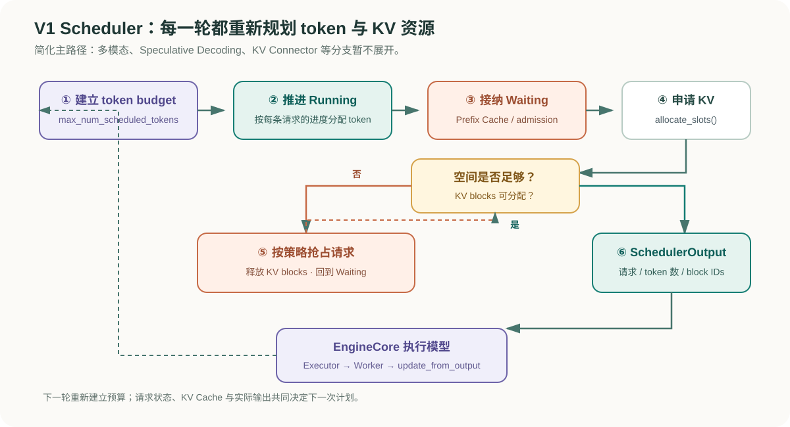
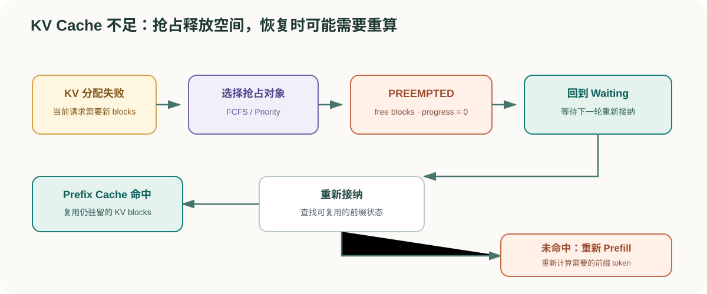

第 10 章 · 调度、批处理与运行时
Scheduler：每轮迭代如何决定执行谁
模型执行一次 forward 之前，vLLM 必须决定哪些请求进入这一轮、每个请求处理多少 token、是否需要新的 KV blocks，以及空间不足时谁先让出资源。Scheduler 就是这组决策的中心。
把推理服务想成一个繁忙的 GPU 车间：请求是等待加工的订单，KV Cache 是每个订单占用的工作台，GPU 每次 forward 是一轮生产。Scheduler 每一轮都要回答三个问题：现在有哪些请求可以推进？每个请求推进多少 token？如果工作台不够，哪些请求需要暂时离开？它输出的不是自然语言答案，而是一份可执行的 SchedulerOutput。
读完这一章，你应该能够
- 解释 V1 为什么用每轮 token budget，而不是只按请求数组 batch。
- 区分
max_num_batched_tokens、max_num_scheduled_tokens与max_num_seqs。 - 按 Running → Waiting → KV allocation → SchedulerOutput 的顺序描述一轮调度。
- 解释 FCFS / Priority 的选择方式，以及 KV Cache 不足时的 preemption / recompute。
- 从 waiting、抢占和延迟指标判断调度瓶颈，而不是盲目放大参数。

10.1 Scheduler 究竟在决定什么？
在第 05 章，我们已经知道 Continuous Batching 会在每轮迭代重新组织请求。本章进一步进入 V1 Scheduler 的实现：它不只是把等待请求排成一个队列，而是维护 Running 请求、多个 Waiting 队列、KV Cache 状态和本轮已经消耗的预算。
对一个请求，Scheduler 最重要的进度量之一是 num_computed_tokens：模型已经计算到请求序列的哪个位置。它会与请求当前需要处理的 token 总量比较，得到本轮还需要推进多少 token。这个统一视角能覆盖：
- Prefill：尚未计算的 Prompt token 需要进入模型。
- Decode：模型为请求生成新 token 后，下一轮需要把新 token 对应的状态推进到 KV Cache。
- Chunked Prefill：长 Prompt 尚未处理完时，本轮只推进其中一段。
- Prefix Cache：已有的前缀状态可以减少需要重新计算的 token 数。
- Speculative Decoding：草稿 token、占位 token 与验证结果会影响本轮 token 计划。
因此，V1 的核心思路不是先进入一个独立的“Prefill 阶段”，再进入一个独立的“Decode 阶段”，而是对每个请求计算它当前还需要多少 token，并在一轮预算内尽可能推进。
10.2 三种容量约束不能混为一谈
调度参数中有几个名字很像，但它们约束的是不同维度：
| 参数 | 约束对象 | 直觉 |
|---|---|---|
max_num_batched_tokens | 一轮可处理的输入 token 容量 | 这一轮 GPU 最多接收多少 token 工作 |
max_num_scheduled_tokens | Scheduler 单轮实际可发出的 token 数上限 | 通常与 batched token budget 相同；Speculative Decoding 等路径可能需要更小 |
max_num_seqs | 模型执行器为单轮请求数准备的容量，并作为默认接纳上限 | 这一轮最多有多少条 sequence 参与执行 |
max_num_active_seqs | 允许占据 RUNNING 状态的请求数 | 可以降低活跃 Decode batch，而不必缩小执行器已准备的 buffer |
为什么请求数和 token 数必须分开？一个 batch 里可能有 32 条请求，每条只推进 1 个 Decode token；也可能只有 1 条请求，却要处理数千个 Prompt tokens。两种 batch 的请求数相同或相反，GPU 工作量却完全不同。
本轮已调度 token 总数 = Σ_request 本轮分配给该请求的 token 数Scheduler 会确保本轮 token 总数不超过配置上限。真实执行还可能受到 Encoder 预算、Speculative Decode slots、KV Cache blocks、模型长度、LoRA 数量以及多模态输入边界等约束。
不要把配置类里的测试默认值当成生产默认值。当前源码中的 SchedulerConfig 会注明部分字段默认值主要为测试便利；真实 EngineArgs 会结合平台、模型和运行模式解析配置。部署时应检查实际启动日志与最终配置，而不是从一个字段定义推断所有场景。
10.3 V1 一轮调度的执行顺序
把 Scheduler.schedule() 简化为教学流程，可以拆成五步。这里保留主干逻辑，暂时省略多模态 Encoder、KV Connector、Speculative Decoding 和其他扩展分支。
- 建立预算：初始化本轮
token_budget，并读取当前 Running / Waiting 请求数量和暂停状态。 - 推进 Running：先遍历已经运行的请求，计算它们还需要多少 token，并受本轮预算、模型长度和其他限制裁剪。
- 申请 KV blocks：为请求本轮新增 token 申请 KV Cache slots。若申请成功，记录本轮分配的 block 和 token 数。
- 接纳 Waiting：如果还有活跃请求槽位和 token budget，再尝试接纳等待请求；必要时先查 Prefix Cache，再计算真正需要新做的 Prefill 工作。
- 生成 SchedulerOutput：把本轮请求、token 数、block IDs 和执行所需元数据打包，交给 EngineCore 的 Model Executor。
交互观察：一轮 Scheduler 决策
建立预算：假设教学示例的单轮 token budget 为 16。此时预算是 16，Scheduler 还没有把 token 分配给任何请求。
推进 Running：两条 Running 请求各需要推进 1 个 Decode token。Scheduler 分配 2 个 token，剩余预算为 14。
接纳 Waiting：一条新请求携带 30 个 Prompt tokens。它不需要一次性全部完成，可以在剩余预算内推进一段；实际可推进长度还受其他配置约束。
检查 KV：为这段新计算申请 KV Cache slots。如果空间不足，Scheduler 会尝试按照调度策略释放某些 Running 请求的 blocks；如果无法释放足够空间，这条请求本轮就不能推进。
输出计划：SchedulerOutput 描述本轮哪些请求各自处理多少 token、使用哪些新 blocks，以及模型执行和输出处理所需的其他元数据。EngineCore 随后执行模型并把结果交回 Scheduler 更新状态。
源码中有一个值得记住的细节：Running 请求先被处理，Waiting 请求随后才尝试接纳。若某个请求由于预算或其他资源约束本轮无法推进，某些分支会跳过它，让后面的请求继续尝试；因此不能把实际调度简化成“严格 FIFO、一个请求阻塞整个队列”。
10.4 KV Cache 不够时如何抢占
假设模型权重和运行时工作区已经占据大部分显存，多个长上下文请求又逐渐填满 KV Cache。某个 Running 请求需要新的 KV blocks，却无法立即分配。Scheduler 可以选择一个正在运行的请求进行 Preemption（抢占），把它的缓存块释放出来，再尝试当前请求。

当前 V1 的 _preempt_request() 关键动作包括：
- 释放请求持有的 KV Cache blocks 与 Encoder Cache 引用。
- 把请求状态设置为
PREEMPTED，并将num_computed_tokens重置为 0。 - 清理 speculative token 状态，记录抢占次数。
- 把请求放回 Waiting 队列，等待后续重新接纳。
重新接纳时并不一定要把所有 Prompt 从头计算：如果相应的 Prefix Cache blocks 仍然驻留且请求前缀匹配，Scheduler 可以恢复一部分已计算前缀；否则就要重新做 Prefill。换句话说，抢占释放了显存，却可能增加后续计算量。
抢占不等于请求失败。请求被标记为 PREEMPTED 后会回到等待队列，仍有机会继续执行。真正结束的状态包括停止、长度上限、用户中止、错误等；源码中的 RequestStatus.is_finished() 明确把 PREEMPTED 排除在 finished 状态之外。
10.5 FCFS、Priority 与公平性
当前 V1 提供 FCFS 与 Priority 两种调度策略。它们影响请求排队顺序，也影响 KV Cache 不足时选择谁作为抢占对象。
| 策略 | 等待队列顺序 | KV 不足时的典型抢占选择 |
|---|---|---|
| FCFS | 按请求到达顺序处理 | 从 Running 队列尾部选择最后一个运行请求 |
| Priority | 先按优先级，再按到达时间处理 | 选择数值更大的 priority；同优先级时优先抢占到达更晚的请求 |
Priority 的数值语义容易看反：当前实现中较小的 priority 数值表示更早处理；因此当需要抢占时，max(priority, arrival_time) 对应的是优先级更低、且到达更晚的请求。
两种策略都不自动等于严格公平。长请求可能长期占用 KV Cache，短请求可能频繁进入；高优先级请求也可能让低优先级请求等待更久。生产系统还需要结合租户配额、排队上限、超时、请求长度分布和 SLO 设计 admission control。
10.6 调参应该先观察什么
不要看到 waiting 上升就直接把 max_num_batched_tokens 调大。它主要改变每轮可处理 token 的规模，并不能创造额外 GPU 显存。建议把这些信号放在同一时间窗口里观察：
num_requests_running与num_requests_waiting：判断活跃批次与排队是否持续增长。kv_cache_usage_perc：判断 KV Cache 是否接近容量上限。num_preemptions_total：观察抢占计数的增量，而不是累计值本身。- TTFT、ITL、生成吞吐：判断瓶颈究竟偏向 Prefill、Decode 还是排队。
如果 KV Cache 使用率持续很高且抢占增长，优先检查上下文长度、并发、KV dtype、Prefix Cache 命中和显存预算；如果 GPU 计算不饱和但 token budget 经常用尽，则需要结合模型执行效率和请求到达分布分析，而不是单纯放大并发数。
本章自检
- 为什么 V1 Scheduler 同时需要 token budget 和 request-count limit？
num_computed_tokens如何帮助一个调度循环同时处理 Prefill、Decode 和 Chunked Prefill？- 为什么 KV Cache allocation 失败会触发 preemption，而不是无限等待显存？
- PREEMPTED 为什么不是 finished 状态？重新接纳时哪些计算可能被复用？
- Priority 数值越大是否越优先？当前抢占选择又如何解释？
下一章把 token budget 放进长 Prompt 与短 Decode 混合负载，观察 Chunked Prefill 如何切分 Prefill 工作，以及它为什么会同时影响 TTFT 和 ITL。
参考资料与源码入口
- vLLM, Architecture Overview — Scheduler：V1 token-budget scheduling、FCFS / Priority、Preemption 与 async scheduling。
- vLLM, Optimization — Preemption：KV Cache 不足时的抢占和重算说明。
- 源码：Scheduler.schedule / _preempt_request、SchedulerConfig、Request / RequestStatus。
- 测试：V1 Scheduler tests：验证调度、请求状态和抢占相关行为。
源码审校基线：vLLM commit c2fb5c5aba0a904fdbecb8e01b7c41db5bfaeadf。Scheduler 的队列、异步执行、KV Connector 和多模态分支会持续演进；本文描述的是该源码快照中的 V1 行为，不应直接套用到旧版 V0。